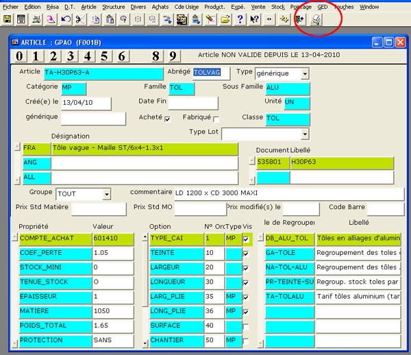
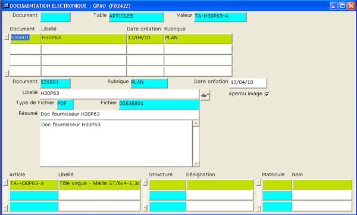
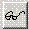
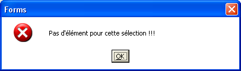
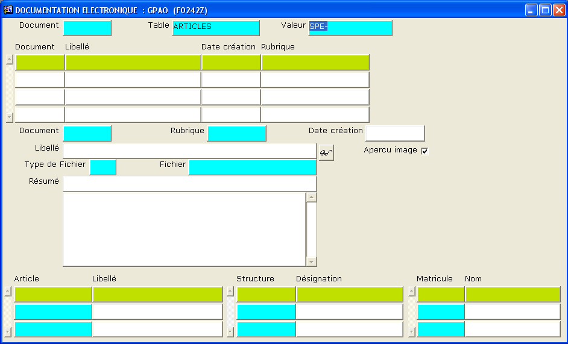

Pour voir le détail du document joint :
Cliquer sur l'icone  de la barre d'icones principale, si des documents sont déjà liés vous les
verrez dans l'écran suivant (F0242Z)
de la barre d'icones principale, si des documents sont déjà liés vous les
verrez dans l'écran suivant (F0242Z)
Si aucun document n'est lié, vous aurez le message d'erreur "Aucun
élément pour cette sélection".

Vous arrivez sur l'écran de Gestion des Documents

Consulter un document
- Complétez le champ TABLE (et éventuellement VALEUR) avec l'une des
valeurs ci-dessous
| TABLE |
VALEUR (peut rester vide) |
Permet l'affichage des documents : |
| ARTICLES |
un code article existant |
liés à une fiche article |
| STRUCTURES |
un code structure existant (ex CH-xxxxx) |
liés à une fiche structure |
| ACH_CDE |
un numéro de commande |
liés à une commande |
| PERSONNELS |
un numéro de matricule |
ajouté par la personne 'matricule' |
- Validez vos choix en appuyant sur la Touche ENTREE pour faire apparaître
la liste des documents
- Dans la zone supérieure, Document / Libellé, Date création / Rubrique
Positionnez vous sur la ligne de document qui vous intéresse, le libellé
et le résumé s'affichent
- Cliquez sur l'icone
 pour
voir le document
- L'aperçu image n'est valable que pour les documents 'image' (.jpg)
Attacher un document en 6 étapes
(depuis une fiche article ou une fiche structure)
Après avoir cliqué sur l'icone GED ,
vous pouvez avoir une boite de dialogue indiquant "Pas d'élément pour
cette sélection":
Cette boite indique que l'article ou la structure, n'a encore aucun document
lié.

Cliquez sur OK, puis passez à l'étape 1,
si vous n'avez pas ce message d'erreur (des documents sont liés à l'article),
passez directement à l'étape 3.
- Sélectionnez la valeur, et coupez la(Ctrl+X) (cette sélection servira
plus tard pour renseigner le lien entre le document et la fiche article),
la zone valeur est vide, validez par Entrée.
- La liste des documents existants apparaît.

- Appuyez sur la touche F7 pour ajouter un enregistrement, (en cas de
message d'erreur, supprimez au préalable le code valeur en haut de page et
appuyer sur entrée pour faire apparaître la liste des document existants,
puis appuyez sur F7)
- Renseignez les champs Rubrique, Libellé,
Type, Résumé
(Ctrl +E pour agrandir la zone d'édition)
Afin de retrouver facilement vos documents, n'oubliez pas de leur donner un libellé clair.
Par exemple : Patte vent indice A,
ce libellé sera peut-être votre seul
moyen de retrouver facilement votre ajout dans la liste des documents en
haut de l'écran.
Le résumé permet de mettre plus d'info...
- Placez vous sur le champ Fichier et appuyez sur la touche F4
- Une boite de dialogue de recherche de fichier apparaît, recherchez et sélectionnez
et validez le fichier à inclure dans la GED

Si le chemin de recherche est trop long, le fichier ne pourra pas être inclus.
- Appuyez sur F5 pour transférer et enregistrer votre document.
- N'oubliez pas de compléter la zone inférieure avec le code de l'article
(Collez la valeur sélectionnée précédemment (Ctrl+V))
- Vous pouvez également indiquer un code structure (CHANTIER :
CH-xxxxxx, FOURNISSEUR: FO-xxxxxx)
voire votre matricule.
- Appuyez sur F5 pour enregistrer le lien entre le document et la fiche
article.
Quittez l'écran en appuyant sur la touche F3
note : il est possible de lier un document a plusieurs codes articles,
voire à une ou plusieurs structures et/ou un matricules.
Quels documents peut-on inclure ?
Nous avons volontairement limité les extensions de fichiers
pouvant être intégrés : JPG , PDF, Dessin Autocad
Quelle rubrique utiliser ?
La rubrique n'est là que pour permettre une utilisation particulière par un
logiciel.
Par défaut, utilisez AUTRE
La rubrique BIBLI ne doit être utilisée que pour les aperçus avec des
fichiers d'extension jpg
La rubrique PLAN ne doit être utilisée qu'avec des fichiers d'extension jpg
Les rubriques ou cas d'utilisation logiciel au 16/04/2010 :
| RUBRIQUE |
TYPE |
Usage |
Extension |
| BIBLI |
BIB |
Aperçu des profilés / joints dans les fiches articles, les
étiquettes code-barre |
JPG |
| PLAN |
|
Réservé Saisie Graphique - Inclus dans certaines impressions de la GPAO |
JPG ou compatible OLE2 |
| PROC |
PCD |
Procédures |
PDF |
| TROMBI |
TRO |
Trombinoscope |
JPG |
| DOCGP |
|
Ajouté via un écran de commande - non lié à un article,
structure, ou personne |
|
| AUTRE |
|
|
|
Note du programmeur :
La
seule règle est d'utiliser pour les rubriques BIBLI et PLAN
des
types de fichiers ayant une extension compatible avec Forms/report
(serveur OLE2)
afin
de permettre leur affichage/édition dans les écrans (fiche article) et
les reports (édition OF, étiquette)
en
clair pour BIBLI et PLAN il faut du bmp, jpg, voire documents de la suite
office
mais
pas de pdf ni dxf ni dwg ...
Au
pire ces images ne s'afficheront pas dans le fenêtre article ni dans les
reports (OF/étiquette)
Quel type utiliser ?
Chaque type est lié à une extension et un emplacement de
stockage
| TYPE |
Usage |
Extension |
Remarque |
| BIB |
Aperçu des profilés / joints |
JPG |
Réservé à un usage spécifique |
| TRO |
Photo du trombinoscope |
JPG |
Réservé à un usage spécifique |
| PCD |
Procédure (document pdf) |
PDF |
Réservé à un usage spécifique |
| PDF |
Document PDF |
PDF |
|
| DXF |
Dessin Autocad |
DXF |
|
Peut-on lier un document à un autre élément de la GPAO ?
Chaque document inclus
dans la GED peut être liée depuis l'écran présenté ci-dessus à:
- une fiche article (Générique Éphémère ou Standard)
- une fiche structure (Chantier, Client, Fournisseur, etc.)
- une fiche matricule (Personne)
Depuis les écrans "commande agence", "commande usine",
"commande achat", etc., il est possible de lier ces mêmes document ou
d'autres spécifiques aux documents correspondant. (voir Ajout d'un document PDF dans une commande)
Attention !
Lors d'une impression de commande, les éventuels documents GED inclus ne seront
pas imprimés.
Il faut aller consulter l'écran GED pour éditer chaque document lié.
Cette limitation est dû à la multiplicité des formats possibles.
Lors de la consultation d'un document inclus en GED, votre système
d'exploitation cherche automatiquement le logiciel adéquat pour la consultation
du document. (par exemple: un document DXF peut être ouvert par Autocad ou un
simple viewer)
|